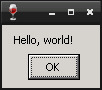

Steward
分享是一種喜悅、更是一種幸福
程式語言 - Netwide Assembler (NASM) - Win32 API (NASMX) - Hello, world!
參考資訊：
https://masm32.com/board/index.php
https://www.nasm.us/xdoc/2.13rc9/html/nasmdoc0.html
經典的Hello, world!程式框架總是能夠讓人細心品味一款程式語言的美好，司徒就使用一個簡單的Message對話盒來展現Hello, world!框架
main.asm
%include "c:\\nasmx\\inc\\nasmx.inc"
%include "c:\\nasmx\\inc\\win32\\windows.inc"
%include "c:\\nasmx\\inc\\win32\\user32.inc"
%include "c:\\nasmx\\inc\\win32\\kernel32.inc"
entry start
section .data
szCaption declare(NASMX_TCHAR) NASMX_TEXT("main"),0
szContent declare(NASMX_TCHAR) NASMX_TEXT("Hello, world!"),0
section .text
proc start, dword argc, dword argv
locals none
invoke MessageBox, NULL, szContent, szCaption, MB_OK
invoke ExitProcess, NULL
endproc
Line 1~4：Header檔案
Line 6：程式進入點
Line 8：初始化的資料區段
Line 9~10：初始化的Global變數，型態是TCHAR且最後一個byte是0
Line 12：程式區段
Line 13~18：proc、endproc用來定義Procedure的區間
Line 14：沒有Local變數
Line 16：顯示Message對話盒
Line 17：結束Process並且釋放相關資源
Makefile
TARGET=main
MYWINE=WINEPREFIX=~/.wine_x86 box86 wine
NASM32=/home/user/.wine_x86/drive_c/nasmx
all:
${MYWINE} ${NASM32}/bin/nasm.exe -fwin32 ${TARGET}.asm
${MYWINE} ${NASM32}/bin/GoLink.exe /entry _main ${TARGET}.obj kernel32.dll user32.dll
run:
${MYWINE} ${TARGET}.exe
clean:
rm -rf ${TARGET}.exe ${TARGET}.obj
編譯、執行
$ make $ make run
